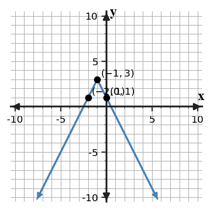

Transformations
Mathematical idea: Transformations act on key points in predictable ways across function families.
Students will identify and graph stretches, compressions, reflections, and translations. They will use tables and equations to check whether representations match.
Learning Target
Learning Target: Students will analyze and graph transformations involving stretches, compressions, and reflections.
I can statements
- I can design transformed graphs using stretches, compressions, reflections, and translations of parent functions.
- I can apply transformation rules to key points and features across function families.
- I can assess whether an equation, graph, or table represents the same transformed function.
What's To Come
This is a long-range preview for future lessons. Do not solve it today. Instead, annotate it individually. Circle anything familiar, underline symbols or directions that seem important, and write notes about what information you think will be needed later.
As you annotate, ask yourself: What parts (words, symbols, graphs) do you KNOW? What parts look FAMILIAR? What parts look like jibberish?
Synthesize an equation, key-point table, and graph description for a function made from $y=|x|$ by reflecting over the $x$-axis, stretching vertically by factor $2$, and translating right $1$ and up $3$. Explain how each representation shows every transformation.
Intro
Directions
Read the introduction aloud with a partner or in a small group. As you read, annotate the text by highlighting important ideas, circling key vocabulary, and writing short notes about connections, questions, or predictions in the margins.
A transformation can change the height, direction, or location of a graph. Multiplying a function by a number changes the outputs, so it creates a vertical stretch or compression. The input values stay in the same locations unless there is also a horizontal shift.
A negative multiplier outside a function reflects the graph over the $x$-axis. Outputs that were positive become negative, and outputs that were negative become positive. The graph turns upside down compared with the parent function.
Several transformations can happen in the same equation. A key-point table helps because each parent point can be changed step by step before the graph is drawn. This reduces guessing and makes mismatches easier to find.
Graphs show stretches, compressions, reflections, and translations through visible features. Tables show the same transformations by changing ordered pairs, and equations show them through parameters.
In a model, a transformation might represent a steeper cost, a reflected direction, or a shifted starting point. The strongest answer connects the parameter to a visible change and to what that change means.
Stop and Discuss
- What does multiplying a function by a number do to the outputs?
- What does a negative multiplier outside the function do?
- Why are key-point tables helpful when several transformations happen?
A vertical multiplier changes every output of the parent function.

For $g(x)=-2|x+1|+3$, the graph of $y=|x|$ moves left 1, stretches by factor 2, reflects over the $x$-axis, and moves up 3.
| Parent point | Transformed point |
|---|---|
| $(0,0)$ | $(-1,3)$ |
| $(-1,1)$ | $(-2,1)$ |
| $(1,1)$ | $(0,1)$ |
The vertex has meaning as the highest output because the reflection turns the V-shape downward.
Example 1: Name the Transformation
In $g(x)=4f(x)$, name the transformation from $f$ to $g$.
You Try It 1: Identify a Reflection
In $h(x)=-\frac12 f(x)$, name the transformations from $f$ to $h$.
Stop and Discuss
- How can you tell whether a multiplier changes inputs or outputs?
Example 2: Graph a Transformed Absolute Value Function
Use the blank coordinate plane to graph $y=-3|x-2|+1$. Plot the vertex and at least four transformed key points.

You Try It 2: Graph Another Transformed V-Shape
Graph $y=2|x+2|-3$. Plot the vertex and at least four transformed key points.
Stop and Discuss
- Which point is easiest to transform first, and why?
Quadratic transformations can be tracked by moving the vertex and matching points.

The equation $y=-\frac12(x-2)^2+4$ moves the vertex to $(2,4)$, reflects the parabola, and compresses outputs by factor $\frac12$.
| Parent point | Transformed point |
|---|---|
| $(0,0)$ | $(2,4)$ |
| $(-2,4)$ | $(0,2)$ |
| $(2,4)$ | $(4,2)$ |
The graph opens downward, so the vertex represents a maximum output.
Example 3: Graph a Transformed Quadratic Function
Use the blank coordinate plane to graph $y=\frac12(x+1)^2-4$. Plot the vertex and at least four transformed key points.
You Try It 3: Graph Another Transformed Parabola
Graph $y=-\frac13(x-2)^2+5$. Plot the vertex and at least four transformed key points.
Stop and Discuss
- How does reflection change the meaning of the vertex?
Example 4: Find a Table Mismatch
The equation $y=-2|x-2|+4$ and the table are meant to match. Find the first mismatch, justify it with substitution, and revise the incorrect output.
| $x$ | 0 | 1 | 2 | 3 |
|---|---|---|---|---|
| $y$ | 0 | 2 | 4 | 1 |
You Try It 4: Revise an Incorrect Output
The equation $y=3|x+1|-2$ and the table are meant to match. Find the first mismatch, justify it with substitution, and revise the incorrect output.
| $x$ | -2 | -1 | 0 | 1 |
|---|---|---|---|---|
| $y$ | 1 | -2 | 0 | 4 |
Stop and Discuss
- Why is substitution a reliable way to check a table?
Summary
Today you analyzed transformations that stretch, compress, reflect, and translate parent functions. You used key points to make those changes visible.
A multiplier outside the function changes outputs, a negative outside reflects over the $x$-axis, and shifts move the key features to new locations.
A common error is changing the graph by eye without checking key points or substituting values.
Strong understanding means you can explain how an equation, graph, and table show the same transformed function.
Common Mistakes
- Forgetting the reflection. Why it is tempting: the stretch number gets attention first. What to check instead: check the sign of the outside multiplier.
- Stretching inputs instead of outputs. Why it is tempting: tables have both inputs and outputs. What to check instead: outside multipliers change outputs.
- Moving points in the wrong order. Why it is tempting: several transformations feel crowded. What to check instead: start with the parent key point and apply each change.
- Trusting a table without checking. Why it is tempting: tables look official. What to check instead: substitute at least one input into the equation.
- Losing symmetry. Why it is tempting: points are plotted one at a time. What to check instead: plot matching points equal distances from the vertex.
Optional Future Task Reflection
Look back at the future task. Do not solve it yet. Highlight one part that makes more sense now than it did at the beginning. Circle one part that still feels unfamiliar. Write one sentence about what representation you would look at first.
In $g(x)=3f(x)$, name the transformation from $f$ to $g$.
Use the blank coordinate plane to graph $y=-2|x+1|+3$. Plot the vertex and at least four transformed key points.
What is one idea about stretches, compressions, reflections, and transformations you understand better now than at the start of class? Write at least one complete sentence.
What is one thing about stretches, compressions, reflections, and transformations you still want to understand or practice? Be specific — name the idea, not just "everything."